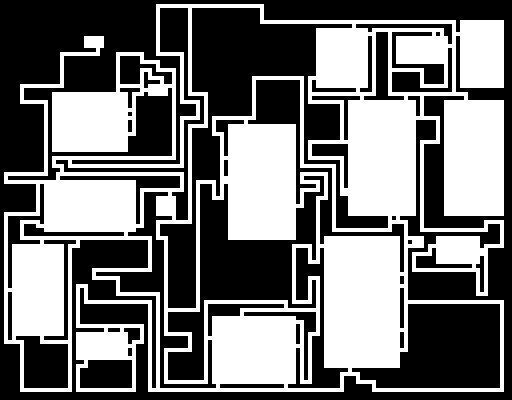
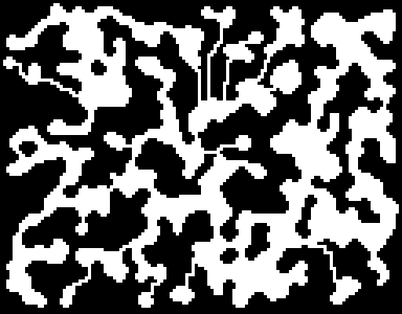

Dungeon generation is an important part of games design. Some games require dungeons to be created on the fly, other games designers use automatic generation to speed up their work.
Currently the generator is a straight port of Bob Nystrom's work here and it's got a very simple interface, just:
int width = 200; int height = 100; unsigned char *dungeon = makedungeon(width, height);

Very nice.
For cavern levels, a generator based on square rooms and corridors is no good. So we have a separate cavern generator.
It works on the cellular automaton principle. We start off with all the tiles set to random, except for the borders which are hard-coded to walls. Then we majority filter several times. This creates coherent regions of cavern and wall.
The cavern regions are not connected, so we label the separate regions, then for each one, take the point closest to the centre. The we draw a slighly jagged corridor from cavern to centre until we hit another cavern. This is almost but not quite guaranteed to connect all our caverns. So as a last step we eliminate any unconnected caverns and break any 8-connections in the background we might have introduced.
Note that you can modify the function slightly to retain the labels. That might be useful if you want a notion of caverns as rooms or separate encounter areas.
Not too bad.